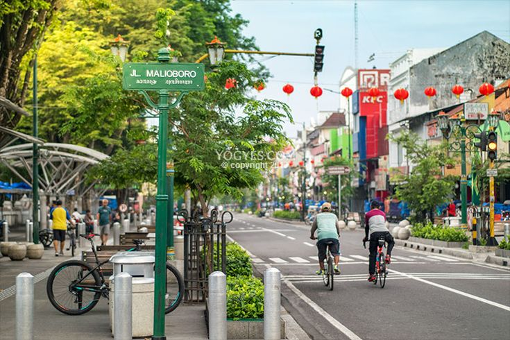
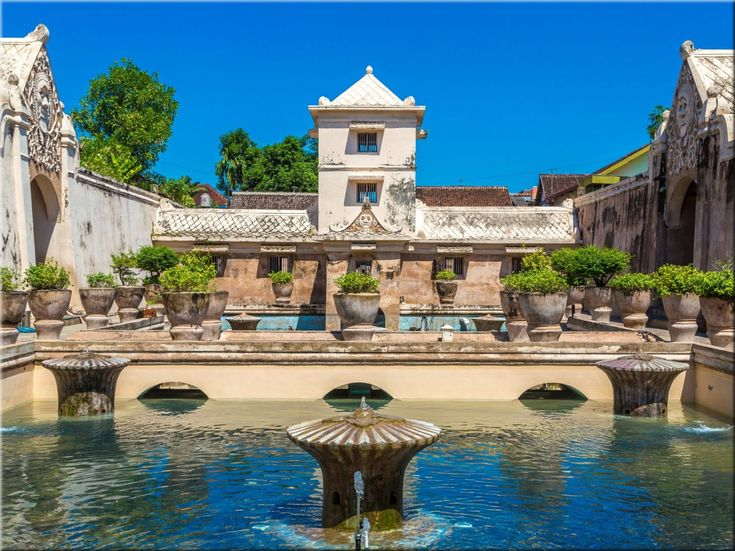
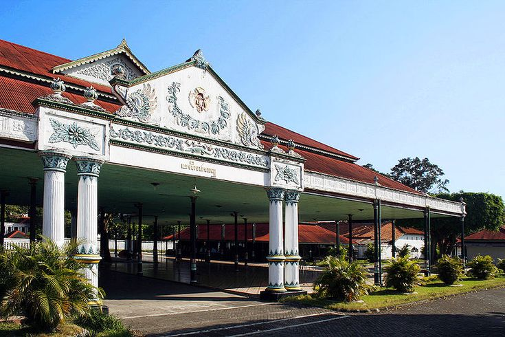
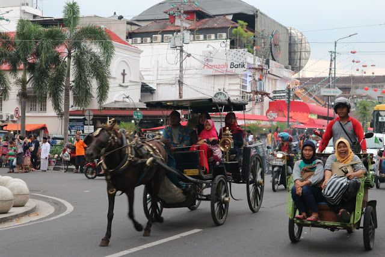
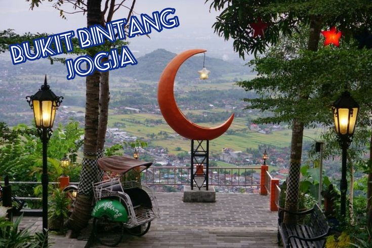
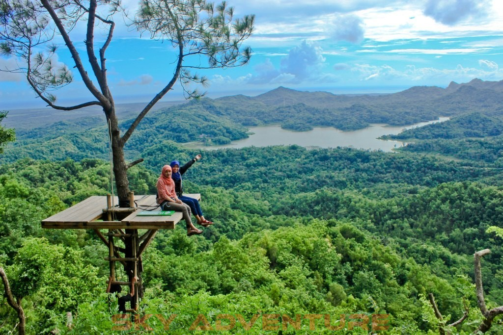
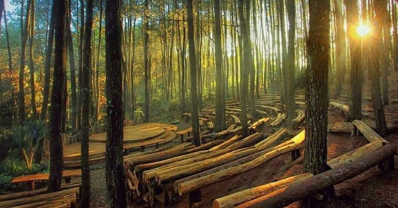
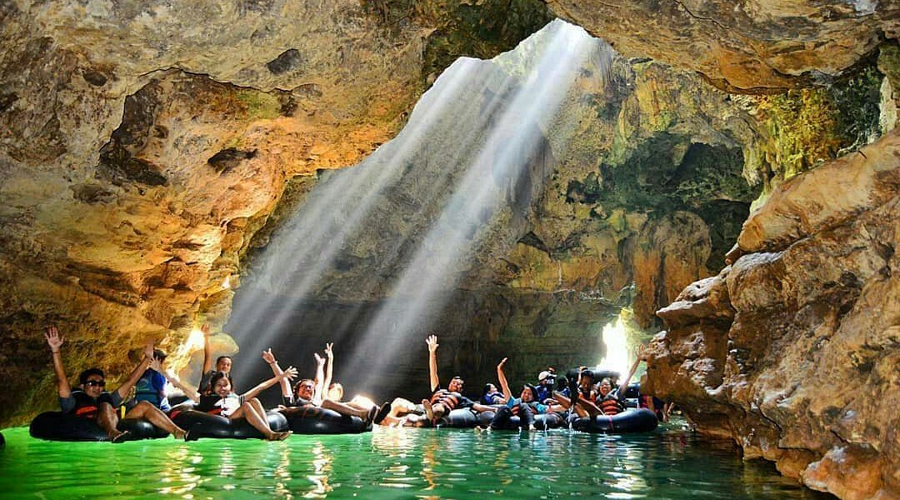

Galeri Wisata
Dokumentasi berbagai destinasi wisata populer di Yogyakarta.
Candi Borobudur
Keindahan Candi Borobudur saat matahari terbit.
Candi Prambanan
Ikon wisata sejarah yang megah dan memukau.

Malioboro
Suasana malam yang ramai dan penuh warna.

Taman Sari
Bangunan bersejarah peninggalan Kesultanan Yogyakarta yang penuh nilai budaya.

Pantai Parangtritis
Menikmati panorama pantai dan matahari terbenam yang sangat memukau.

HeHa Sky View
Tempat favorit untuk menikmati pemandangan Kota Yogyakarta dari ketinggian.

Keraton Yogyakarta
Pusat kebudayaan Jawa yang masih aktif hingga saat ini.

Alun-Alun Kidul
Tempat wisata malam yang terkenal dengan suasana santai dan kuliner.

Bukit Bintang
Tempat terbaik menikmati gemerlap lampu Kota Yogyakarta pada malam hari.

Kalibiru
Destinasi wisata alam dengan gardu pandang yang menyuguhkan panorama perbukitan hijau.

Hutan Pinus Mangunan
Kawasan hutan pinus yang sejuk dan menjadi favorit untuk bersantai serta berfoto.

Goa Pindul
Wisata susur gua menggunakan ban pelampung yang sangat populer di Gunungkidul.